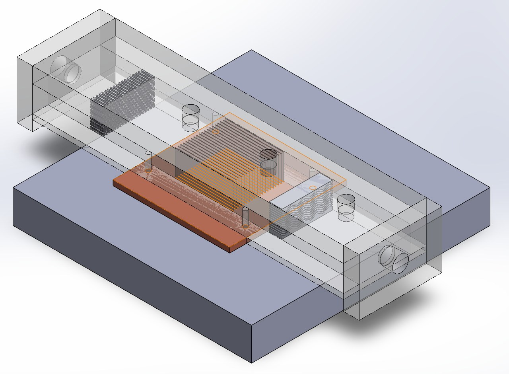
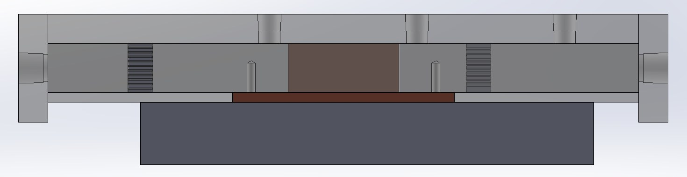
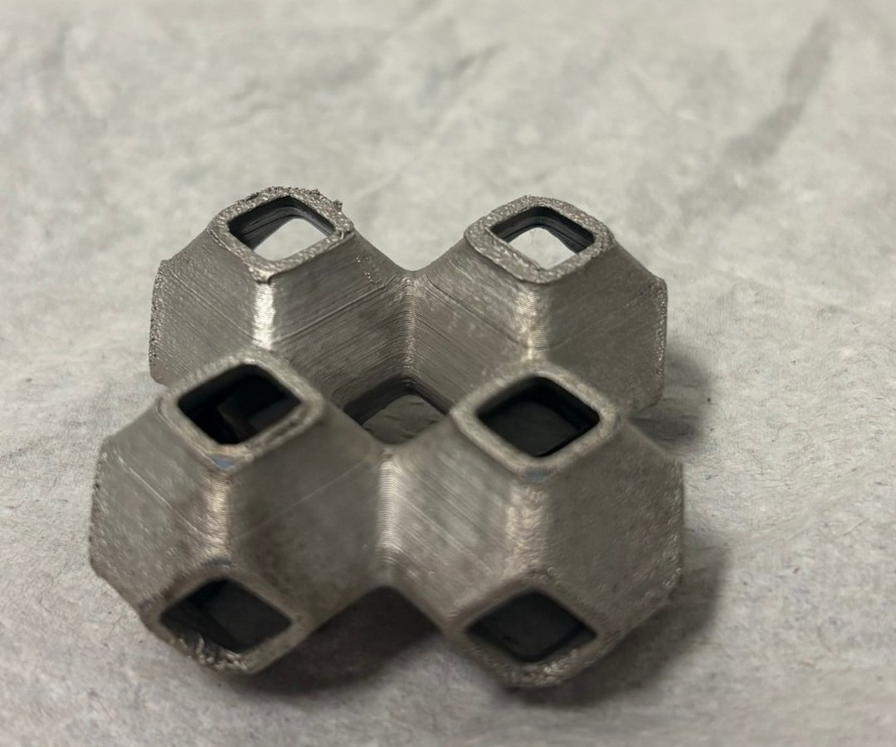
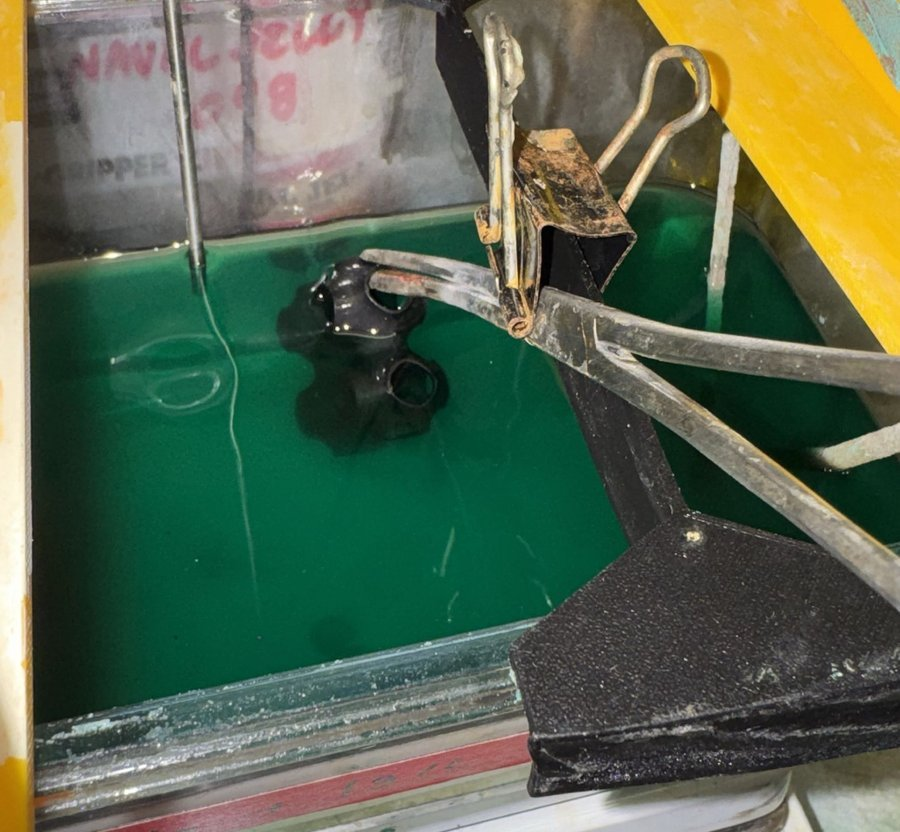

Heat transfer chamber: 3D-printed lattices as heat exchangers
A test chamber for measuring how well 3D-printed, electroplated TPMS lattices move heat away from a hot plate, and the CFD and machine-learning plan for choosing which lattices to build next.

The project
TPMS lattices make promising heat exchangers. They pack a lot of surface area into a small volume, their smooth channels let fluid through easily, and they can only be made by 3D printing. Plating a printed polymer lattice with metal makes it conduct heat far better.
Two results from our literature review shaped the plan:
- In plated primitive lattices, thermal conductivity rose by about 0.059 W/m·K for every micrometre of copper (Cheung et al., 2025).
- TPMS-based pin fins cut pressure drop by up to 54% in a microchannel heat sink while improving thermal efficiency (Raafat et al., 2025).
The open problem is consistency. Electroplating a complex lattice evenly is hard: coatings build up at exposed edges and corners and thin out inside. The project, Active learning optimization of electroplating for enhanced coating uniformity and thermal properties, aims to link lattice geometry, plating conditions and thermal performance so you can choose a lattice for the property you care about.
The work is with Alan, mentored by Brennan Birn, in collaboration with Yuxin Hu and Prof. Peter Hosemann.
What I did
The test chamber
The chamber is a sealed channel that runs coolant across a lattice specimen sitting on a copper heater plate, with inlet and outlet ports at each end. It turns "is this lattice a good heat exchanger?" into numbers: the temperature drop across the specimen and the pressure drop needed to push the flow through.

Printed, electroplated specimens
The specimens are FDM-printed TPMS lattices, electroplated to give them a metal surface for conductivity and durability.


Literature review and the plan
We reviewed work on electroplating optimization, plating TPMS structures, simulating coating thickness, thermal performance of plated lattices, and the role of surface curvature. From that, we proposed a desirability function built on the 200+ lattices we'd already measured. You give it a lattice's composition and the plating solution, choose which properties matter, and it ranks designs. The work runs on three fronts:
- Digital lattice metrics: curvature descriptors for hybrid lattices, from my MATLAB curvature tool.
- Computational plating models: fixed-mesh electrochemical simulation, possibly smoothed-particle hydrodynamics, to predict coating thickness.
- Experiments: coating uniformity measured by computer vision on cross-sections, and thermal performance from the chamber (with IR imaging) and pressure drop.
We are building the optimizer around a genetic algorithm, the approach used in the literature to maximize a multi-response desirability function for nickel plating. CFD in Ansys Fluent is planned next, so simulated thermal performance can sit alongside the chamber measurements.
What I learned
This project showed me that designing a heat exchanger is always a trade-off. More surface area and thicker plating move more heat, but every added feature makes it harder to push fluid through. That is why we built the chamber to measure both temperature and pressure drop, so a lattice that looks better on one metric can't hide a cost on the other.
It also changed how I think about manufacturing. How evenly a lattice plates depends on its geometry, so the shape we design and the process we use to make it can't be treated separately. That is exactly why my curvature descriptors sit in the same model as the plating and thermal tests. The literature review taught me to read the field before building. It showed us what had already been measured, what hadn't been tried, since most studies test a single lattice type or only simulate, and where our data on over 200 lattices could add something new.